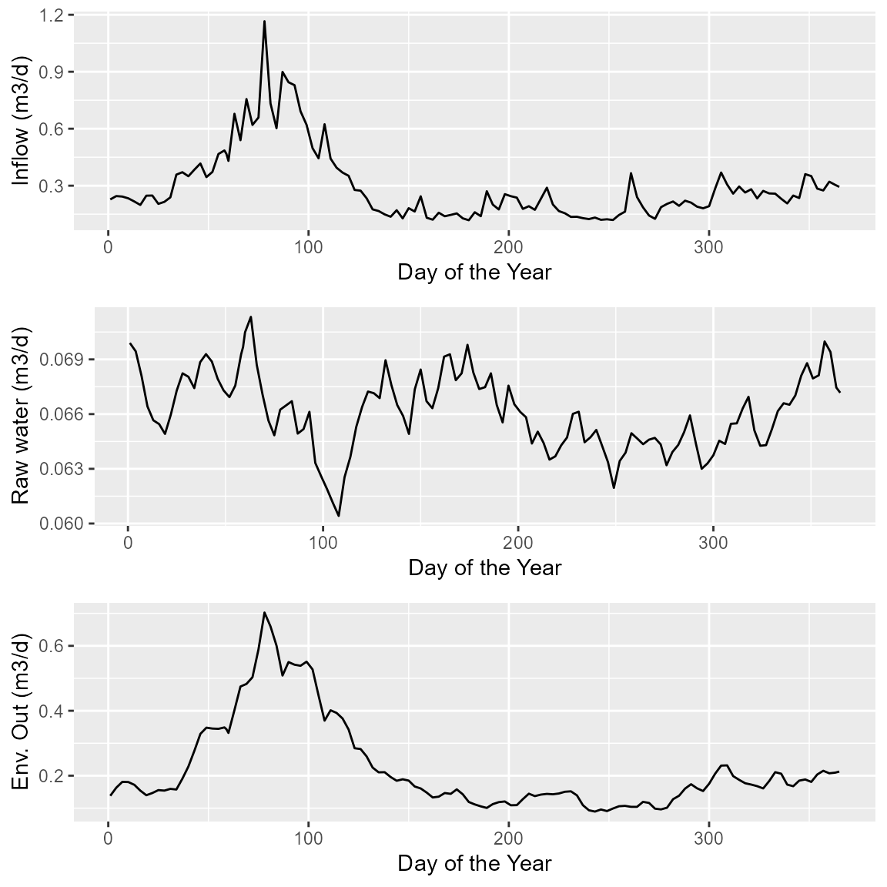
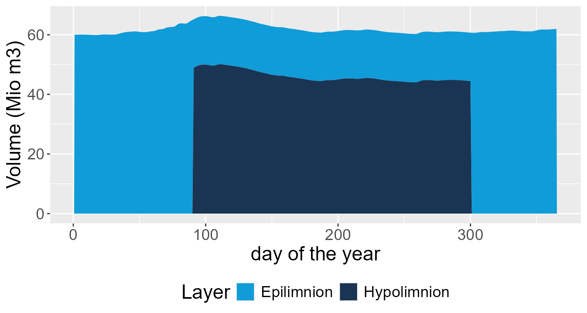
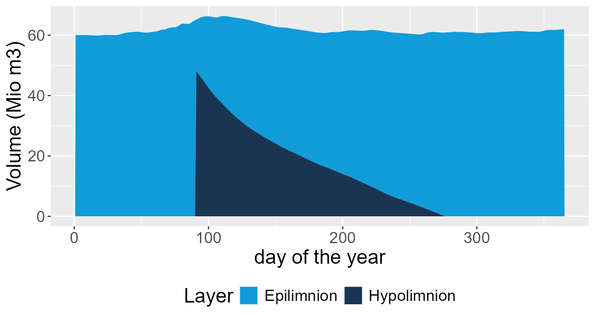
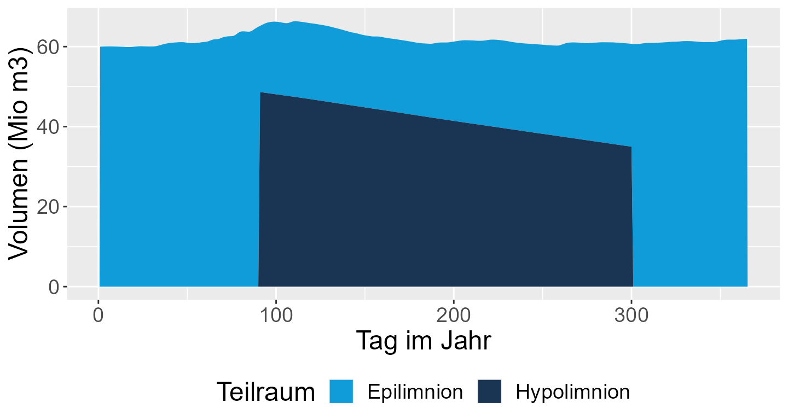
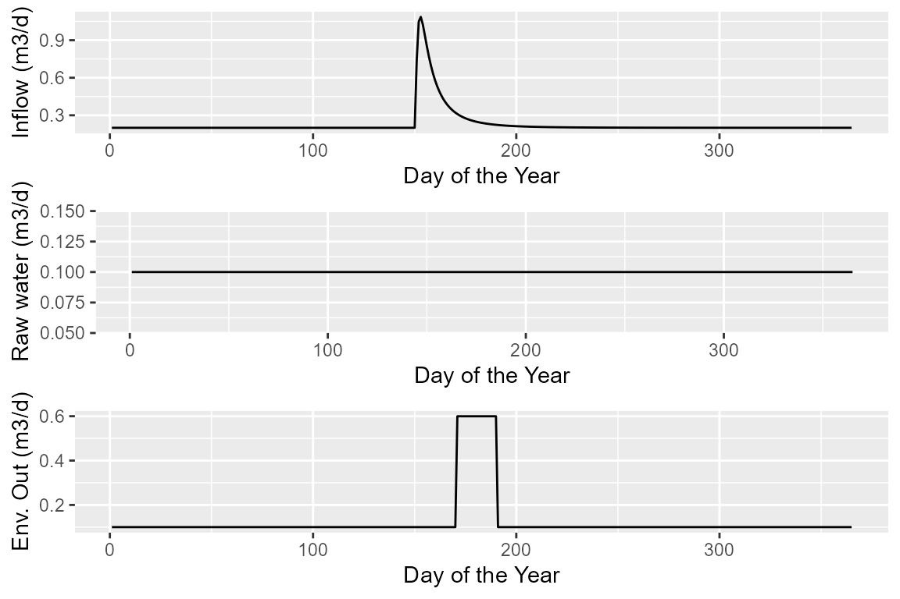
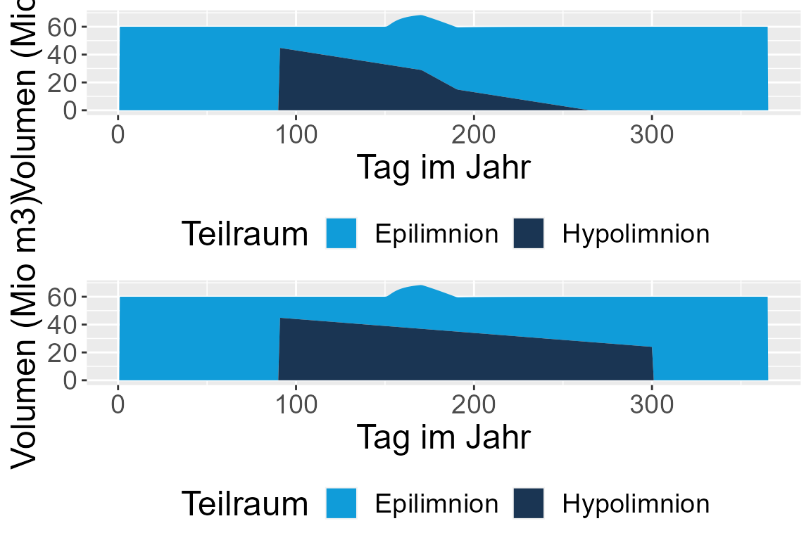

Reservoir Mass Balance Simulation with Package `outfloweR`
Thomas Petzoldt
2023-03-30
outfloweR.RmdIntroduction
The package aims to demonstrate water management alternatives by means of a simple mass balance model. Currently, the following state variables and inputs are considered:
State variables
- Volume of the mixed layer (\(V_E\)), epilimnion in summer, total volume otherwise)
- Volume of the hypolimnion (\(V_H\))
State equations
\[\begin{align*} \frac{dV_E}{dt} &= Q_{in, E} - Q_{out, E} - Q_{out, wb, E} \\ \frac{dV_H}{dt} &= Q_{in, H} - Q_{out, H} - Q_{out, wb, H} \end{align*}\]
with:
\[ dV_E = dV_E + dV_H \qquad | \qquad V_H = 0 \]
The start time of summer stratification \(t_{strat}\) can be set by the user. At this time point, the total volume \(V\) is subdivided into an epilimnetic volume \(V_E = V \cdot f_{epi}\) and a hypolimnetic part \(V_H = V \cdot (1- f_{epi})\). The end of summer stratification occurs when the hypolimnion is exhausted (\(V_H = 0\)) or time exceeds fixed a threshold (\(t_{autumn\)), mimicking thermal convection. This simple approach was intentionally chosen, even if a full hydrophysical 1D model is also available.
Scenarios
Water inflow and abstraction can be controlled by pre-defined scenarios, currently the following:
- standard: epilimnetic inflow, hypolimnetic outflows
- cold_inflow: hypolimnetic inflow and outflows
- wb_top: epilimnetic inflow, hypolimnetic drinking water abstraction, wild bed outflow taken from epilimnion
Further important settings are vol, the initial volume
of the reservoir and t_strat the time of stratification
onset. The parameter t_autumn specifies the latest end date
of stratificatiion by thermal convection, but stratification can also
occur earlier if the hypolimnion volume is exhausted.
Examples
Series 1: realistic time series with balanced inflow and outflow
The first example shows the standard example with the
discharge_normal example data set provided by the
package.
library("outfloweR")
data("discharge_normal")
plot_flows(discharge_normal)
As a first attempt, we assume that the inflow is rather cold, so that it entrains to the hypolimnion. All outflows are also abstracted from the bottom.
out <- scenario("cold_inflow", vol=60, t_strat=90, t_autumn=300,
discharge_normal$inflow, discharge_normal$outflow,
discharge_normal$outflow_wb)
plot_volumes(out)
In the given data example, inflow and outflow data are well balanced, so that the hypolimnion remains at an approximately constant level. This is of course an approximation, ignoring further hydrophysical processes.
Moreover, a cold hypolimnetic inflow is rarely observed in nature. In most cases, the inflowing water entrains to the epi- or metalimnion. A metalimnion is not considered here for simplicity, so we assume an entrainment to the mixed layer.
out <- scenario("standard", vol=60, t_strat=90, t_autumn=300,
discharge_normal$inflow, discharge_normal$outflow,
discharge_normal$outflow_wb)
plot_volumes(out)
We see that the hypolimnion is exhausted over the year.
The next example shows what happens if the wild bed outflow is abstracted from the epilimnion:
out <- scenario("wb_top", vol=60, t_strat=90, t_autumn=300,
discharge_normal$inflow, discharge_normal$outflow,
discharge_normal$outflow_wb)
plot_volumes(out)
We see that hypolimnetic volume can be saved, i.e. we have more volume available volume for drinking water abstraction. This will also have positive effects on water quality.
Example 2: Simplified time series with a summer flood
Here we create an artifical inflow and outflow time series, where we assume constant inflows and outflows, plus a summer flood event generated from a log-lormal function. This leads to an increased total volume, that is then subsequently removed from the dam.
The data creation is somewhat technical and is given here for full reproducibility. It may be integrated as example data set in the package at a later time.
library("dplyr")
const_discharge <- data.frame(
time = 1:365,
inflow = 0.2,
outflow=0.1,
outflow_wb=0.12
)
time <- 1:365; wave_start <- 150; yscale <- 10
wave <- yscale * dlnorm(time - wave_start, meanlog=2, sdlog=1)
summer_flood <- const_discharge |>
mutate(inflow = inflow + wave,
outflow_wb = ifelse(wave_start + 20 < time & time <= wave_start + 40, outflow + sum(wave)/20, outflow))
plot_flows(summer_flood)
Now let’s compare the mass balance model with scnearios
standard (hypolimnetic wild bed) and wb_top
(wild bed abstraction from epilimnion):
library("ggpubr")
out1 <- with(summer_flood,
scenario("standard", vol=60, t_strat=90, t_autumn=300,
inflow, outflow, outflow_wb))
out2 <- with(summer_flood,
scenario("wb_top", vol=60, t_strat=90, t_autumn=300,
inflow, outflow, outflow_wb))
fig1 <- plot_volumes(out1)
fig2 <- plot_volumes(out2)
ggpubr::ggarrange(fig1, fig2, ncol=1)
In result, we can clearly see the loss of hypolimnetic volume in the standard scenario and the shorter stratification period (top figure) and the extra hypolimnion volume gained in the second scenario, if wild bed outled is taken from the epilimnetic layer.